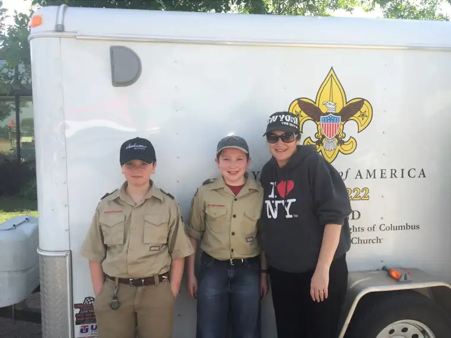

[This is first in a series I’m calling “Mercy Chronicles,” part of my quest to discover mercy and all that it means in this Extraordinary Jubilee Year of Mercy and beyond. This excerpt was adapted from a portion of a talk, “Discovering Mercy,” that I will give for the Society of St. Vincent de Paul Northcentral Region Conference this weekend here in Fargo, N.D.]
Let me introduce you to my youngest two sons, Adam and Nick.
Adam, 13, is our fourth child and middle son. Though slight in build for his age, he makes up for that in his kindhearted ways and sharp and thoughtful mind. When Adam came into our family, everything came into balance. We now had four kids — two bookend boys, and two girls in the middle. Then came Nick. When Nick entered our world, Adam’s was thrown topsy-turvy. To make things even harder for him, Nick, now 11 and nearly three years younger, has caught up with his brother in height, and exceeded him in strength and shoe size. From Adam’s perspective, this is NOT a just situation, and whenever we go anywhere together, people “accuse” them of being twins, which is an unwelcome torment as far as the older brother is concerned.
Nick also does not share Adam’s mild temperament. He is boisterous and creative with deep emotions. Where Adam is cautious, Nick is daring; he learned to ride bike before Adam because he had no fear. They each bring different and unique gifts and charisms to our family.
But it’s not surprising that Nick drives Adam absolutely crazy, and tests his will daily. In moments of pure frustration, Adam has said he wishes Nick had never been born. I’m sure he’s not the first sibling to utter such words. Little sisters and brothers can bring us to the end of ourselves, it seems, more quickly than anyone.
Well, I can only do so much to rectify these heartaches that Adam feels most of all. And lately, I have been frank with him. Just last week, I told him his little brother is his surest path to heaven. I explained that because Nick pushes his hot buttons with the precision of a heart surgeon, it forces Adam to see his lack, creating a need for refinement and restraint. And that while I know it’s hard, very hard, in the end, it will help him get along with others in the world who try him – those who are perhaps in greatest need of mercy, but don’t seem to merit it in any way.
Just a few days after this parent-child chat, we loaded these two up for Boy Scout Camp for a week, and that first night, I got one those rare glimpses a mother hangs onto with all her might.

Though Boy Scout camp is old hat for Adam, it’s Nick’s first year, and from the start we sensed things might not go well. That first evening, a text (today’s equivalent of a camp letter) came in from Nick, telling of spider-invested latrines and stomachaches and ticks and terrible shivers. Later, he called in tears. We could hardly understand what he was saying; we only knew for sure that he was miserable. We encouraged him to stick it out, and assured him of our prayers. Not long after that, another text, this time from Adam – the one who, you might recall, wonders if God made just ONE mistake when he made his younger brother, Nick.
But reading his text, all of that vanished in an instant:
“Mom, sorry for not responding earlier. I was thinking about Nick. I can’t put into words how sorry I am for him and how I wish I could take his place. He really is suffering so please pray for him that he will feel better tomorrow. Good night. I love you and miss everyone already.”
As you might imagine, his words — and the heart behind them — touched this mama’s heart deeply. I could go so far as to say I witnessed a small miracle within those short but sincere sentiments, one brother to another.
It calls to mind something I read earlier this month, a meditation Pope Francis gave to priests on June 2. Our Holy Father said that if we look at the works of mercy as a whole, we see that the object of mercy is human life itself and everything it embraces, and that life, as “spirit,” needs to be educated, corrected, encouraged and consoled.
“We need others to counsel us, to forgive us, to put up with us, to pray for us,” our pontiff remarked. “The family is where these works of mercy are practiced in so normal and unpretentious a way that we don’t even realize it…”
It’s true. Our families really are the training ground for our mission of mercy. Because if we can’t get this mercy thing right when we’re at the dinner table and our little brother refuses to pass the ketchup when we ask and is making cat noises and tipping his chair for the 100th time, then it’s going to be pretty hard to get it right in all the other places we’ll end up in this life.
[Update: As of this writing, just a few days following the boys’ arrival at camp, the attitude and outlook expressed in camp “letters” had shown a great turnaround! We are grateful for God’s provisions from a distance.]
Q4U: Where did mercy show up in your life this week?